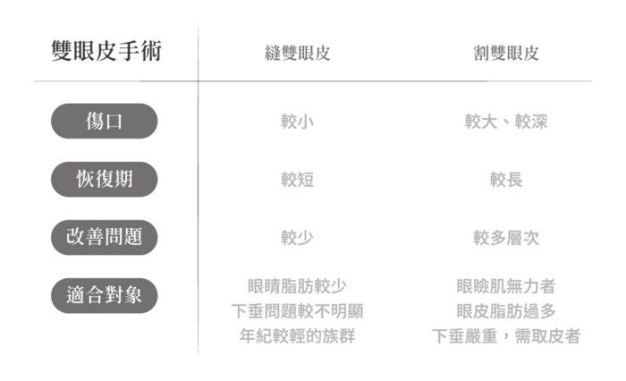

想脫單？雙眼皮到底要縫還是要割？
怎麼選擇才適合自己
一雙明眸有神的大眼，可說是現代女性所追求的外表必要條件，尤其現代人對於五官的精緻度越來越重視，好看的雙眼不只會自己外表加分，也會在人緣及工作上帶來更多的優勢，所以許多東方女性會選擇在眼睛上進行治療或是手術，不管是縫雙眼皮或是割雙眼皮，來為自己的雙眼增添更多魅力，不過，究竟要打造適合自己的雙眼皮手術上，要選擇縫雙眼皮？還是割雙眼皮？
深邃雙眼皮，縫還是割，怎麼評估？想要脫【單】，打造深邃的雙眼皮，詢問卻發現有縫雙眼皮與割雙眼皮的兩種手術，該怎麼選擇，建議根據顧客本身的眼睛條件來做抉擇。一起往下瞭解吧！
縫雙眼皮：
常常聽到許多人會說，雙眼皮一定要用割的，不然用縫的很快就會掉下來！這是真的嗎？其實並不然，主要採用縫式雙眼皮的患者，本身眼睛條件較好，意思就是眼周沒有過於肥厚的脂肪組織、也沒有眼瞼下垂、皮膚也還算緊實，簡單來說就是年輕緊實的眼周肌膚、沒有多餘的伴隨問題，賴慶鴻醫生就會建議採取縫式的雙眼皮手術喔！
割雙眼皮：
從上述，我們了解，縫式的雙眼皮所能處理的眼睛問題較受限，反之，割雙眼皮則是能針對較多眼睛眼周問題，進行多層次的改善，能處理到的症狀如，眼周的脂肪、肌肉、摺痕高度以及眼皮問題，所以如果眼周伴隨著脂肪過多、下垂嚴重、眼瞼肌肉無力等等症狀，都可以在選擇割雙眼皮前，跟醫生討論，也能在手術中一併改善這些問題喔！
上述，我們了解在選擇割雙眼皮及縫雙眼皮的條件上有所不同，也明白割式雙眼皮能改善較多的眼周問題，但是同時傷口較大，所需要的恢復期也較長。而簡單地幫愛美民眾整理以下簡單的資訊，讓民眾可以先自行了解適合那一種雙眼皮手術！
縫雙眼皮與割雙眼皮並非想像中簡單，並非只有在單眼皮上多一條摺痕的效果，反而在施作前醫生會根據患者的臉型、輪廓、眼神、眉眼間距、瞳孔大小等多項評估後再進行較適合。
常見3大疑問，專科醫生來解惑
不管是縫雙眼皮或是割雙眼皮，除了以眼周條件來選擇適合自己的手術之外，許多患者仍對於雙眼皮手術猶疑不決的原因，就是來自於這3大常見問題，想要做雙眼皮手術的你，更要了解看看！
1. 雙眼皮可以維持多久？
不管是縫的雙眼皮或是割的雙眼皮，都會依據個人後續的保養與生活習慣而有所落差，如果本身眼周伴隨問題較多，但卻選擇縫式雙眼皮，當然所能維持的時間會更短，因為過重的眼皮脂肪，或是無力的眼瞼肌，會在每天眨眼使用的狀況下，影響到手術雙眼皮的維持時間，同時也會隨著時間老化，眼周問題逐漸浮出，而影響到維持時間的長久度，所以並非雙眼皮手術就是一勞永逸喔！
2. 割的雙眼皮是永久性的，所以比縫的雙眼皮好？
不管是哪一種雙眼皮手術，都具有時效性，會因為年齡增加、眼周脂肪量的改變而有所差異，但是割式的雙眼皮，因為切口較深，同時也能矯正較多眼周問題，在維持度上確實會較縫式雙眼皮來的持久喔！
3. 雙眼皮會不會留疤？
雙眼皮手術是在上眼皮上留下切口進行手術，所以難免會造成疤痕的出現，但是疤痕的消褪是會根據個人的體質、醫生的技術、後續的保養而有所相關，如果患者本身就屬蟹足腫體質，或是疤痕增生體質較容易留下疤痕，專業的醫生並不會建議患者一定要執行雙眼皮手術；另外，醫生的技術也很重要，必須了解眼周肌膚的架構組織，再根據患者肌膚的紋路切開後縫合，讓疤痕宛如天生自然；最後就是靠患者自身的保養了，可以在術後加強冰敷與使用除疤凝膠來減少腫脹及加強代謝，讓手術後的雙眼盡快恢復，才能加快看到雙眼皮的效果喔！
看完上述後，是否對於雙眼皮手術更加了解呢？不過還是要提醒愛美民眾，在選擇手術療程上必須更加謹慎小心，同時也要在術前讓自己的身心狀況達到最好最適合的狀況下再進行會較恰當喔！
適應症 ：單眼皮、眼皮下垂、眼袋或眼皮鬆弛是最常見的眼皮手術。
手術後照顧 ：冰敷及避免劇烈運動。
可能併發症 ：出血、縫線脫落、不對稱、眼瞼外翻。
禁忌症：眼部有感染疾病者(應先治療並經醫生評估後，再進行手術)、糖尿病患者、乾眼症患者、甲狀腺疾病患者、眼球過於凸出者、有凝血機制異常和嚴重疤痕體質者宜先告知醫師、女性懷孕或月經期間
✥ 任何手術或療程皆會有其醫療風險，實際療效會依個人情形而有不同，以上資訊係做為診療的輔助說明，供參考；歡迎預約諮詢前往揚藝美學診所，並接受醫師親自診斷後，再行確認相關治療是否適用於自己。